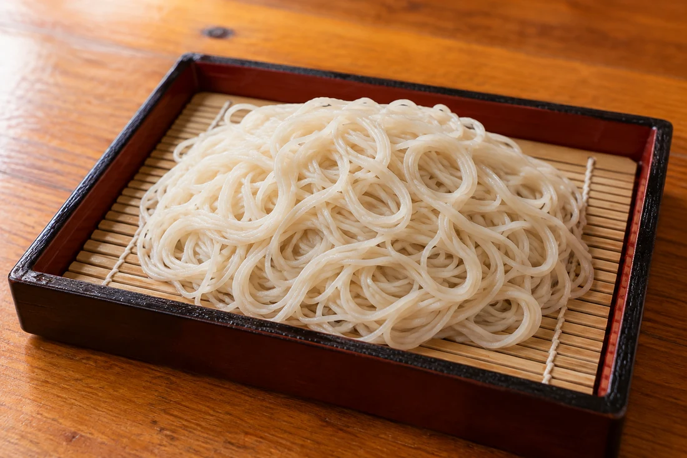
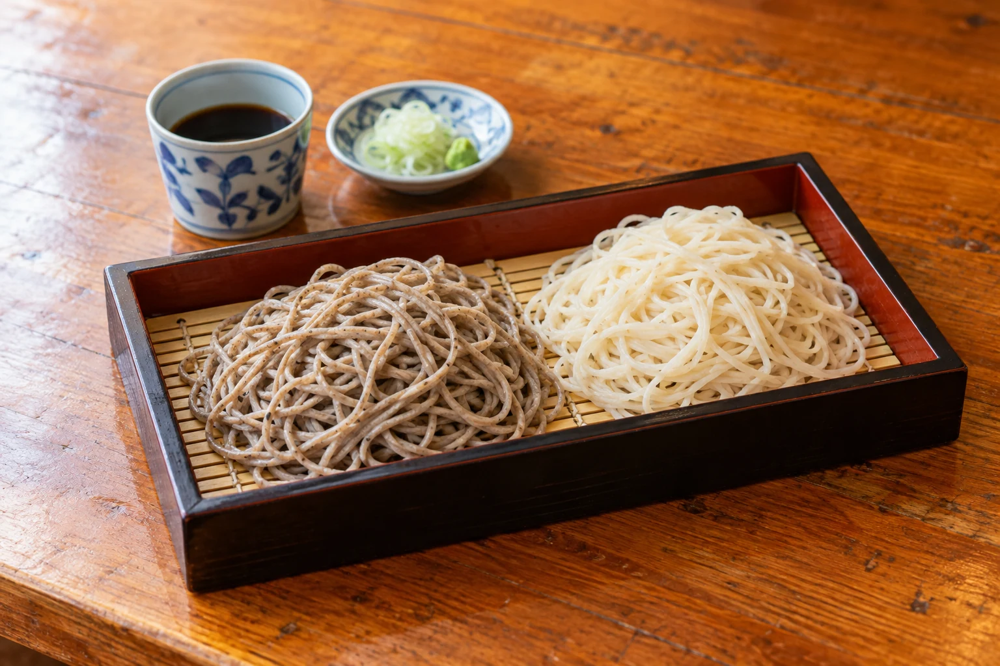
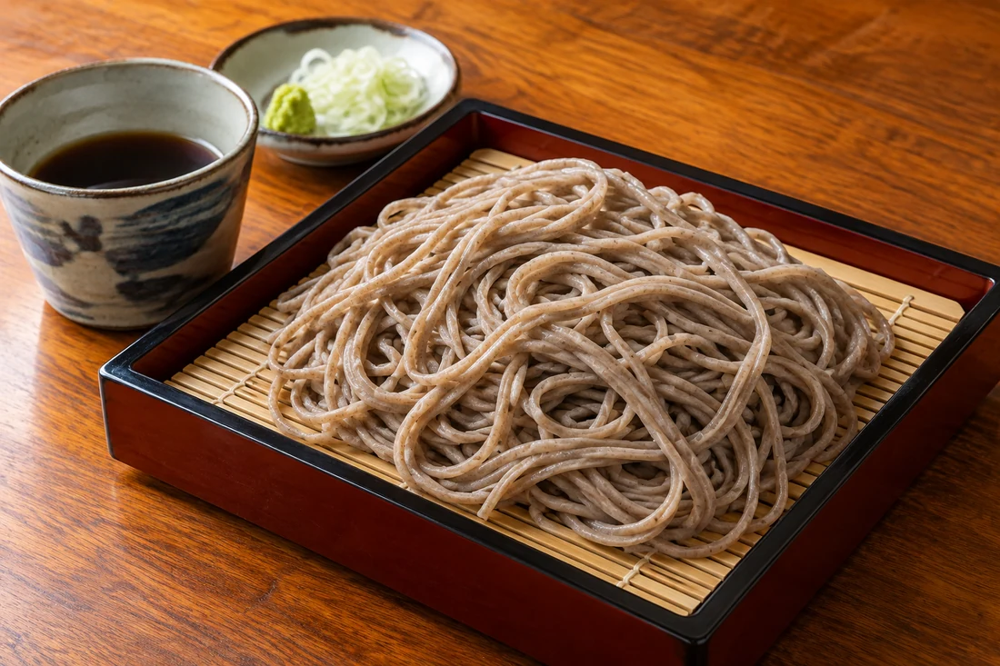
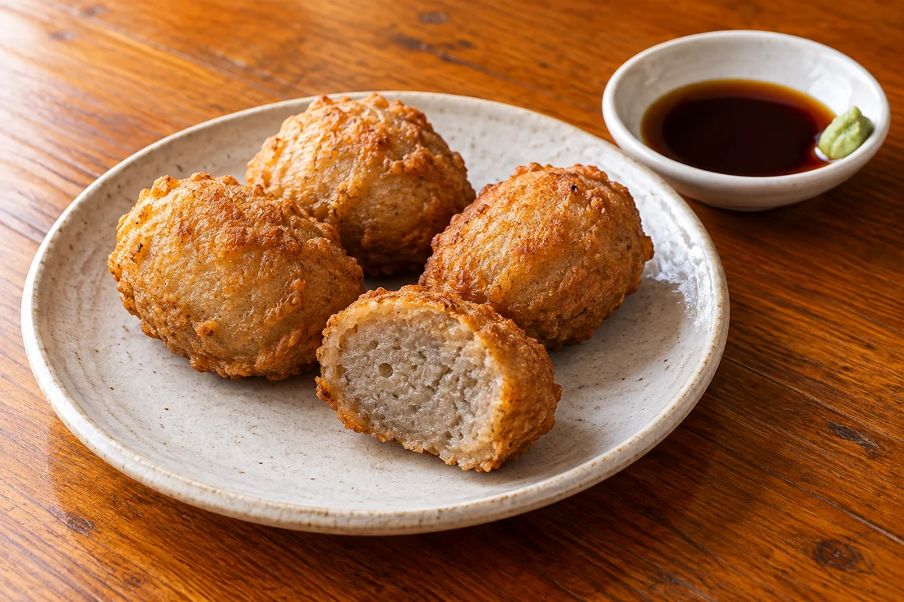

白い更科そば
淡い白色、すっきりした口あたり。
ほのかな甘みを、ゆっくりと。

二つのそば
同じそばでも、色も、口あたりも、風味も違う。
瀧不動生蕎麦で楽しみたいのは、
更科と田舎、それぞれのおいしさです。
まずはひと口ずつ。
食べ比べれば、自分の「好き」が見つかります。

淡い白色、すっきりした口あたり。
ほのかな甘みを、ゆっくりと。

そばらしい香りと、素朴な味わい。
噛むほどに広がる風味を楽しんで。
どちらも味わうなら、あいもり板そばをどうぞ。

そばの、もうひとつの楽しみ
そば粉を練った「そばがき」を揚げた一品。
麺とは違う食感に、そばの楽しみが広がります。
わさびを少し、醤油だれとともに。
おそばに添えて、もうひと口いかがですか。
山寺の一日に
山寺を楽しむ一日の途中に。そばと天ぷらで、お昼のひと息を。
歩いたあとは、腰を落ち着けて。食べ比べを楽しむ昼食はいかがですか。
駐車場がございます。利用場所や条件は、ご来店時にお尋ねください。
ご来店の前に
そばを使用した料理を提供しています。
食物アレルギーのある方は、ご注文前にスタッフへご相談ください。
不定休です。お出かけ前、特に遠方からお越しの際は、当日の営業をお電話でご確認ください。
023-695-2039に電話する ↗駐車場がございます。利用場所や料金・利用条件については店舗へお尋ねください。
寒ざらしそばも扱っています。季節や提供状況により異なりますので、ご希望の場合は事前にお電話でお問い合わせください。
店舗案内
たきふどうきそば
営業日・営業時間は変更になる場合があります。
ご来店前にお電話でご確認ください。
JR仙山線 山寺駅から徒歩圏内。地図から経路をご確認いただけます。
山寺散策の、お昼ごはんに。